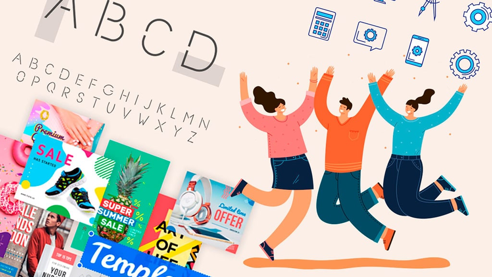

Paginas Web recursos gratuitos
Diseñadores y programadores
The Starter Kit
Está no es una página de recursos, sino una página de páginas de recursos. Una gran selección bien escogida, sin duda un punto de partida impresdincible.
Blugraphic
Recursos gratuitos de gran calidad y variedad: texturas, pinceles, vectores, fuentes, y mockups entre otros.
Pixeden
Pixeden alterna contenido gratuito con contenido premium, a precios muy accesibles. Interesantísima.
Freebies bug
Fuentes, psds, plantillas de WordPress y algo muy original que no encontramos normalmente en el resto de páginas de recursos: snippets de CSS. Muy recomendable.
Premium pixels
Recopila diferentes recursos gráficos como iconos y mock ups, nada mal para salir de un apuro.